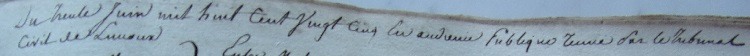
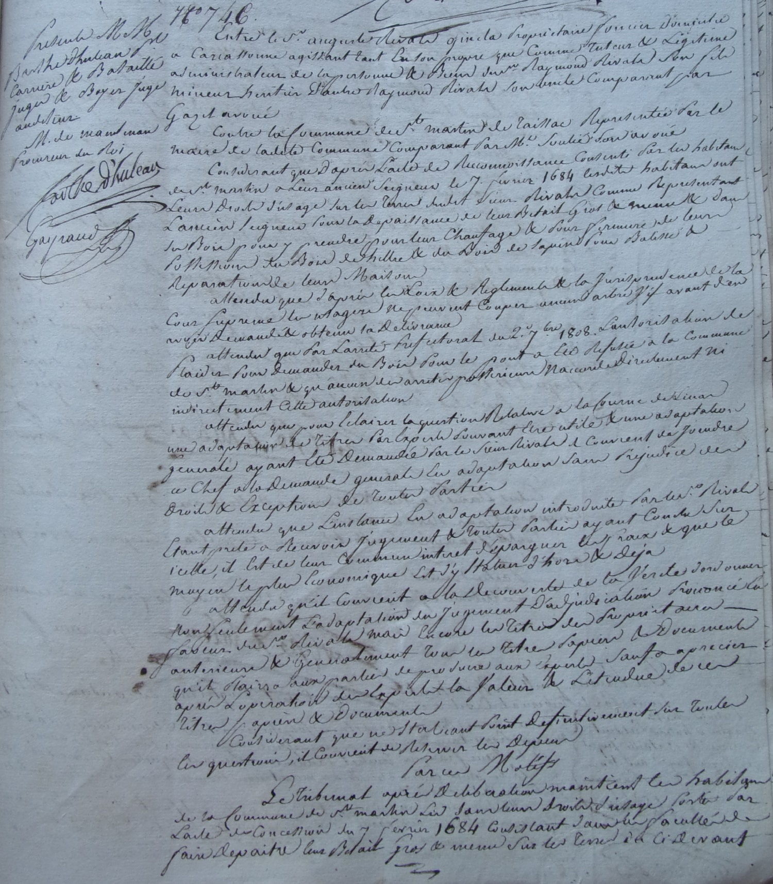
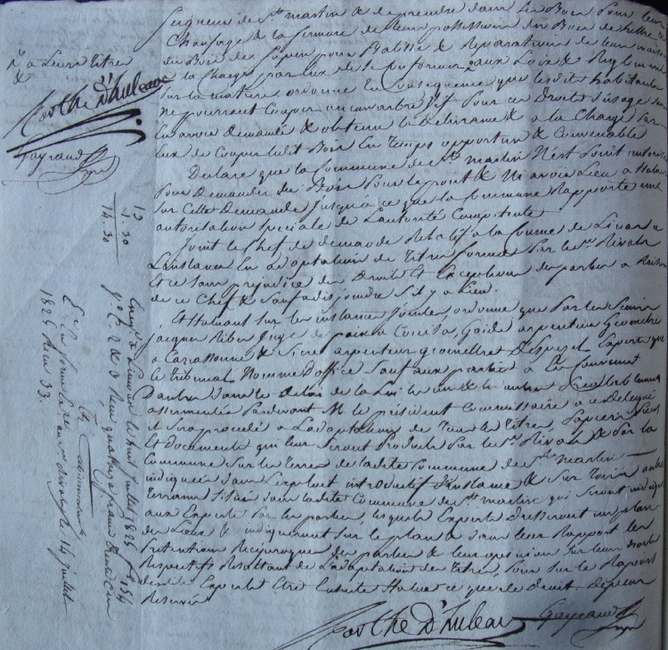
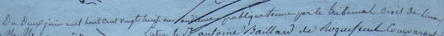
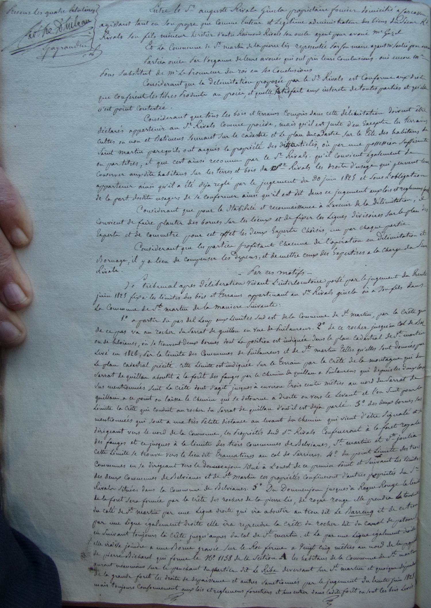
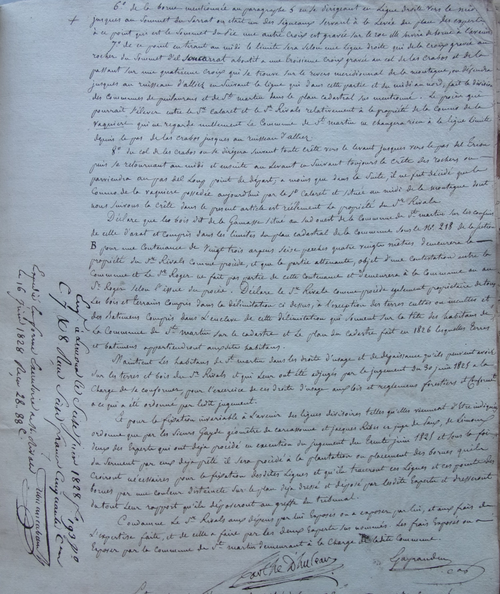

Renouvellement Quinquenal du maire
Le signataire principal de l'acte est le doyen du conseil municipal Jean Marcérou Candaire
Benoit Marcérou et François Vaquier après avoir juré fidélité (même formule que ci-dessus) sont renouvellés dans leur fonction de Maire et adjoint
Nous Jean Marcerou Candaire doyen du conseil municipal de la commune de St Martin Lis, vu l'arrêté de Mr le préfet du dans de ce mois, par lequel ce magistrat a pourvu au nom du Roi à la nomination du maire et adjoint de cette commune, Mr Benoit Marcerou, et François Vaquier exerçant la fonction honorable, avant le renouvellement quinquenal, et y étant maintenus, devant néanmoins, procéder à l'installationde ces fonctionnaires, et étant donc que (?) membre(?) qualité pour cet état(?), avons convoqué les dits sieurs Benoit Marcerou et François Vaquier maire et adjoint de cette commune, ainsi que Mrs les membres du conseil municipal et ayant la présence de tous les susnommés, avons donné lecture de toutes les pièces à ce relatives, et le dit sieur Benoit Marcerou, ayant appris(?) d'être maintenu dans les fonctions honorables de maire, et le sieur Francois Vaquié dans celle d'adjoint, avons reçu d'eux individuellement le serment dont la teneur fut (?) :
Je jure fidélité au Roi, obéissance à la charte constitutionnelle et aux lois du Royaume
De Tout que avons dressé le présent procès verbal que nous avons signé, avec les dits sieurs Benoit Marcerou, François Vaquié, maire et adjoint, Mathias Marcerou
Travaux de réparation de l'église
Il faudra se faire donner les pièces de bois par Monsieur Rivals propriétaire de la forêt dans laquelle les habitants ont leurs usages. (c'est un des articles où j'ai eu le plus de difficulté à lire...)
L'article est signé par tous les membres du conseil sachant écrire
Présents les sieurs Mathias Marcerou, Jean Augerau, Antoine Baux, Jean Marcerou, Félix Marcerou, Georges Courrieu, et Jean Bastou membres du conseil municipal réuni dans le lieu ordinaire de leurs séances en session extraordinaire, d'après l'autorisation qu'en donne Mr le préfet, ce qu'apprend Mr le Sous Préfet par sa lettre du 2 du courant, dont Mr Benoit Marcerou maire président l'assemblée a donné lecture.
La bienfaisance de Mr l'évêque s'étendant sur tous ces diocesains et notament sur les temples qui les reçoivent pour exercer leur culte, ceux(?) qu'elles doivent présenter la décence qui leur est convenable, en même temps que ses réparations lorsqu'elles en sont suceptibles ; et la toiture de l'église de St Martin devant être renouvellées,
Monseigneur évêque a voulu en instruire Mr le préfet ce qui a porté ce magistrat à accorder l'autorisation à Mr le maire de convoquer le conseil pour traiter sur les moyens de pourvoir à cette même dépense, sur l'offre de venir aux secours des habitants, vu la connaissance qu'il a de leurs faibles moyens, et de faire dresser un devis estimation des réparation susénoncées
Le conseil municipal devant transigner(?) à Monseigneur l'évêque et à Monsieur le préfet leur sollicitude pour réparer l'objet qui leur est le plus cher, invite Mr le Maire à faire dresser le devis qui lui est demandé pour accentu(?) les ravages(?) de la toiture de l'église, et de se faire délivrer par Mr Rivals propriétaire de la forêt dans laquelle les habitants ont leur usages les pièces de bois nécessaires pour la reconstruction de l'objet prémentionné et de prier Monsieur le préfet de vouloir leur accorder par tous autres moyens les fonds nécessaires pour faire cette même réparation, et de leur entrunique (?) au nom de tous les habitants la plus grande gratitude ; en conséquence un extrait de la présente sera transmis à Mr le préfet pour pourvoir aux fins de la demande de l'assemblée ; et ont les membres de l'assemblée signé sauf ceux qui n'ont su.
A St Martin Lis les jour mois et an susdits [5 signatures dont le maire et adjoint]
Devis pour l'église et imposition correspondante
lecture du devis de Louis Maure (Maçon) pour l'église et
Délibération sur le financement par surimposition
(Et où on reparle de Monsieur Cussol Aimé de Axat pour le régler définitivement en 1822
ce qui pose soucis pour augmenter les contributions - déjà au maximum)
Vers une participation volontaire des habitants ?
Demande d'une allocation sur les fonds qui sont à la disposition du préfet
Acte signé par les conseillers municipaux
Présents les sieurs Mathias Marcerou, Jean Augerau, Jean Bastou, Félix Marcerou, Antoine Baux, Jean Marcerou Candaire, George Courrieu membres du conseil municipal réuni dans le lieu ordinaire de leurs séances, en session extraordinaire ainsi qu'il en sont autorisés par Mr le préfet, comme l'annonce Mr le Sous préfet dans sa lettre du 29 juin dernier, dont Mr Benoit Marcerou maire, présidant le conseil, a donné lecture, de laquelle résultant que le devis estimatif dressé le 16 juin aussi dernier, par le sieur Louis Maure maçon et platrier, portant la désignationde tous ce qui doit être exécuté pour réparer l toiture de l'église et le montant des frais qu'occasionnent les ouvrages, doit être soumis au conseil municipal. Ce même devis ayant été reconnu devoir être exécuté dans son entier pour faire la réparation du couvert de la dite église et la fabrique se trouvant bien éloignée de pouvoir fournir aux frais de cette même réparation, le conseil municipal duivant(?) comme tous en autres habitantts de la commune, que ce qui est indiqué dans le devis surenoncé, ait son effet , et ne pouvant être recouru à une imposition extraordinaire pour parvenir à ces fins, attendu que par sa délibération du 18 mai dernier, le conseil municipal a émis de nouveau son vœu pour qu'au moyen d'une imposition au principaldes contributions foncière, personnelles et mobilière,
Le sieur cusool aîné mégociant d'Axat, reçut en 1822 le tiers de sa créance pour avoir fourni en 1806 le nombre de pièces de bois nécessaires à la reconstruction du pont de la communesur la rivière d'Aude, que cette dette datant déjà d'une époque déjà(?) reculée, il est de toute justice que ce créancier reçoive le paiement des objets qu'il a fourni, d'où devra résulter que si la demande prémentionnée est accueillie de l'autorité supérienre, les 20 centimes que la loi permet d'additionner au principal des contributions foncière, personnelle et mobilière se trouvant épuisés, et qu'il devient voir inutile de former la demande d'une imposition extraordinaire pour le produit être employé aux reparations dont s'agit :
Néanmoins le conseil municipal non moins vuiuraux(?) que tous en autres habitants de la commune de ST Martin Lis devoir le temple où ils se réunissent pour invoquer en commun l'Etre Souverain, et assister aux cérémonies de son culte, avoir la décence qui lui est convenable, et les répartaions dont il s'agit étant d'absolue nécessité. Les conseillers municipaux ont cru(?), comme ne pouvant mettre en usage le moyen qu'indique Mr le Sous préfet dans sa lettre prémentionnée, employer celui d'une prestation volontaire, nouvbe(?) tant le défaut de moyens des habitants de St Martin, et pour cela avoir lieu. Ces derniers ont été invités de se rendre dans le lieu des séances du dit conseil, pour être participé des instructions de ses membres, cela ayant enfin effet, il a été ouvert un rôle où chacun des habitants ont souscript volontairement, et qui a donné un montant de la somme de 300 francs qui seront néanmoins insuffisant pour exécuter les réparations mentionnées dans le devis qui les détaille, et dans ce devoir là, les conseiller municipaux ainsi que tous autres habitants de St Martin, supplient Mr le préfet de vouloir dans sa bienfaisance pourvoir au solde de la dépense de ces mêmes réparations, par une allocation sur les fonds qui sont à sa disposition
et ont les membres du conseil municipal signé, sauf ceux qui n'ont su.
St Martin Lis le jours, mois et an susdits [4 signatures dont le Maire]
Nomination de nouveaux Conseillers Municipaux
Le sous préfet nomme Marcerou Jacob Izidore, Marcerou Louis, Marcerou Moudié Jean comme membre du conseil municipal
suite déménagement de 2 anciens membres (Jean Bastou, Etienne Chauvet) et décés d'un troisième (Jean Marcerou Patou)
Prestation de serment (toujours le même) par les 3 nouveaux membres.
Autres membres du conseil :
Jean Marcerou Candaire, Antoine Baux, Mathias Marcerou, Georges Courrieu, Félix Marcerou, Baptiste Marcerou, Jean Augereau (+ Benoit Marcerou et François Vaquier)
Nous Benoit Marcerou maire de la commune de St Martin Lis, vu l'arrêté de Mr le préfet de l'Aude du 13 du courant, que nous transmet Mr le Sous Préfet avec sa lettre du 17 du même mois par lequel susdit arrêté, ce magistrat nomme membres du conseil municipal, Mr Marcerou Jacob izidore, Marcerou Louis et Marcerou Moudié Jean, tous propriétaires pour remplacer Mr Jean Bastou, Etienne Chauvet, pour avoir changé de domicile et Jean Marcerou Patau comme étant décédé ; ayant convoqué pour se dernier dans le lieu ordinaire des séances du conseil, les même aux sus, et Mr Jean Marcerou Candaire, Antoine Baux, Mathias Marcerou, Georges Courrieu, Félix Marcerou, Baptiste Marcerou et Jean Augereau, conseillers municipaux, pour être présents à l'installation de leurs nouveaux collègues ; et ayant la présence de tous les susnommés, avons donnné lecture de l'arrêté et lettre prémentionnés. Mr Marcerou Jacob Izidore, Marcerou Louiset Marcerou Moudié Jean ayant accepté les fonctions honnorables qui leur sont conférées, nous les avons invités à prêter le serment prescrit, et tel qu'il est indiqué dans le mémorial administatif n°133, les nouveaux élus l'ont prêté séparément, je jure fidélité au Roi, obéissance à la charte constitutionnelle et aux lois du royaume, de tous quoi avons dressé le présent procès verbal que nous avons signé, avec les sieurs Jean Marcerou Moudié, Mathias Marcerou et Félix Marcerou; non Jacob Izidore Marcerou, Louis Marcerou, Jean Marcerou Candaire, Antoine Baux, George Courrieu et Baptiste Marcerou pour ne savoir.
St Martin Lis les jour maois et an susdits [4 signatures]
Surimposition pour le salaire du garde champêtre
En présense du conseil municipal et des plus imposés
Renouvellement de la surimposition pour le salaire du garde champêtre (jugé indispensable)
Toujours payé 30 francs
Présents les sieurs Félix Marcerou, Jean Augereau, Mathias Marcerou, Jean Marcerou, Jean Marcerou Candaire, Izidore Marcerou, Antoine Baux, George Courrieu, Louis Marcerou, membres du conseil municipal réuni en session constitutionnelle dans le lieu ordinaire de leurs séances, renforcés du sieur Léon Marcerou, François Marcerou, François Vaquié, André Marcerou, Jean Baptiste Marcerou Patau, François Pierre Marcerou, Jean Pierre Ganet, Jean Louis Marcerou et Guilhaume Carol les plus hauts imposés au rôleou contributions, sous la présidence de Mr Benoit Marcerou maire, qui a dit d'après la formation du budget de 1823, vous reconnaissez que ce ne peut être au moyen des revenus communaux que le garde champêtre peut recevoir son traitement en l'année susdite, vous devez donc recourir à une surimposition aux contributions, ainsi que cela a eu lieu depuis l'établissement du dit garde, vous êtes convaincu que sa surveillance de plus en plus nécessaire, vous devez ivue(?) pour qu'il remplisse avec exactitude les devoirs de sa charge, lui assurant son salaire, et vous n'avez d'autre voie que celle que je vous indique, et vous invite en conséquence a délibérer sur mon exposé.
Les membres du conseil municipal et les contribuables qui lui sont adjoints, reconnaissant qu'il est utile de conserver le garde et dèslors nécessaire de pourvoir à son traitement, et n'ayant d'autre moyen que celui de recevoir à une surimposition sur la contribution foncière des fonds non clos, émettent leur vœu pour que cette surimposition ait lieu en 1823 pour une somme de 30 francs sur la contribution préindiquée, et être employée au payement du traitement du dit garde en l'année sus-énoncée et invite Mr le maire à transmettre à Mr le préfet un extrait de la présente, afin que la demande de l'assemblée puisse être revétu de la sanction du Roi. Et ont les membres de l'assemblée signé sauf ceux qui n'ont su. A St Martin Lis Les jours, mois et an susdits
Droit de dépaissance sur les terres du sieur Rivals
Réunion extraordinaire du conseil municipal à la demande du préfet
Où on reparle de la reconnaissance de 1684
Le nouveau proriétaire est le Sieur Rivals Gincla - est ce qu'il est de la famille propriétaire des forges de Gincla - est il venu chercher à St Martin le bois pour ses forges ?
Le maire Benoit Marcerou demande l'autorisation de plaider contre le sieur Rivals Gincla pour faire respecter la Reconnaissance de 1684
les démarches en concilliation pour faire respecter l'ensemble des droits accordés aux martinlyssois par la reconnaissance n'ont pas abouti
Le conseil municipal demande donc au préfet l'autorisation de plaider pour maintenir ces droits d'usage sur la forêt.
Présents Mrs François Vaquié adjoint à la mairie, Mathias Marcerou, Félix Marcerou, Jean Augereau, Louis Marcerou, George Courrieu, Antoine Baux, Jean Marcerou Mounadié, Izidore Marcerou et Jean Marcerou Candaire conseillers Municipaux, réuni extraordinairement dans le lieu ordinaire de leurs séances, en vertu de l'autorisation de Mr le préfet en date du 30 septembre dernier.
Mr Benoit Marcerou maire présidant l'assemblée a dit, d'autres motifs ne m'ont porté à demander notre réunion que ceux de voir maintenir les habitants dans la faculté et usages dont la jouissance leur est accordée par les reconnaissances, comme aussi dans l'exercice du défrichement sur les terres vaines et vagues ce qui n'est pas moins nécessaire aux habitants, aucun de nos ci-devant seigneurs ou de leurs représentants n'a contesté aucun des objets prémentionnés. La conduite de Mr Rivals Gincla devenu propriétaire de la ci-devant seignerie de ce lieu diffère beaucoup de celle de ses prédecesseurs ; pour le porter à la suivre la Reconnaissance de l'an 1684 qui renferme tous nos droits et usages lui a été communiqué, il n'a pu que se convaincre que les habitants de St Martin ont en vertu de cette Reconnaissance ont la faculté de faire dépaitre leur bétail, gros et menu dans le terroir de St Martin, qu'aucun local n'ait excepté de cette faculté, qu'ils ont le droit de prendre dans la forêt de St Martin, essence de sapin, toutes les pièces de bois pour la construction et reconstruction de leurs bâtiments, la fermure de leurs possessions, et pour leur chauffage. Qu'il a été de tous les temps que les habitants de ce lieu ont pratiqué au vu et au su de leurs ci-devant seigneurs ou représentants des défrichement de toutes les terres vaines et vagues, et ce à raison du peu d'étendu du terroir de ce lieu, de sa stérilité et de situation sur des montagnes escarpées. Quoique les habitants de cette commune ne se soient jamais écartés de ce qu'ils avaient pratiqué antérieurement à l'acquisition faite par le sieur Rivals Gincla de terre ci-devant seigneuriale de St Martin, il n'en est pas moins que nonobstant cette conduite et les duive(?) bien prononcés des gens de St Martin de vouloir traiter amiablement avec le dit sieur Rivals Gincla et après divers pourparler à ce sujet, il n'arrive pas que journellement que des procès verbaux sont dressés par les gardes du dit Sieur Rivals contre des individus de cette commune quoiqu'ils n'agissent qu'en vertu du droit et facultés énoncés dans la reconnaissance de 1684, ou en pratiquant des défrichements sur les terrains où ils ont été toujours exercé. N'ayant pu donc parvenir à traiter amiablement avec le Sieur Rivals Gincla, et pour mettre fin à ce que les habitants de St Martin en soient plus troublés dans la jouissance non interrompue de leurs facultés et droits, je vous invite si vous pouvez le juger nécessaire, à demander l'autorisation de plaider contre le dit sieur Rivals Gincla pour cause des motifs sus-énoncés.
Le conseil municipal prenant en considération l'exposé de Mr le maire qui entend qu'au maintien de la jouissance des droits usages et facultés des habitants de St Martin, qui sont autres que ceux que leur assure la reconnaissance de l'an 1684, en menant dépaitre dans le terroir de St Martin le bétail gros et menu, à prendre dans la forêt le bois nécessaire à leur chauffage à la fermure de leurs possessions, bâtisses er réparations de leurs maisons, à pratiquer sur les terres vaines et vagues les défrichements qui ont eu lieu de tous les temps sans trouble ni éviction, de la part de ci-devant seigneurs ou de leurs représentants, les habitants ayant le plus grand intérêt de continuer d'exercer droits usages et facultés, et de voir mettre fin à ce qu'ils ne soient point troublés dans cette même jouissance, ce qui n'arrive néanmoins que trop souvent et constitue les habitants en frais ; d'après ces motifs le conseil municipal délibère, à ce que les habitants de St Martin soient autorisés a plaider contre le sieur Rivals Gincla, pour les seules fins que ce dernier leur conteste. En conséquence Mr le maire est invité de transmettre à Mr le préfet extrait de la présente délibération et toutes autres pièces nécessaires, pour obtenir cette même autorisation. Et ont les membres du conseil signé sauf ceux qui n'ont su
A St Martin Lis les jour, mois et an susdits [6 signatures]
Procès pour reconnaissance du droit sur les terrains enclavés dans le domaine du sieur Rivals Gincla
Présent les Sieurs Mathias Marcerou, Jean Marcerou, Grégoire Marcerou, Izidore Marcerou, Antoine Baux, George Courrieu, Louis Marcerou, Etienne Chauvet [Je croyais qu'il avait déménagé... En tout cas le conseil municipal semble grandement renouvellé], Joseph Marcerou Patau, Jean Marc Marcerou Marquot, membres du conseil Municipal réuni extraordinairement dans le lieu ordinaire de leur séances en vertu de l'autorisation de l'autorisation de Mr le préfet du 1er du mois courant ainsi que l'annonce Mr le sous préfet dans sa lettre du 5 mai précitée sous la présidence de Mr le maire [Benoit Marcerou] de cette commune qui a dit Vous n'ignorez point que l'instance engagée devant le tribunal de Limoux entre Mr Rivals Gincla et la commune de St Martin, sur laquelle il devait être prononcé le neuf juin dernier, a été renvoyée au trois août prochain vu ce que Mrs les juges de ce même tribunal trouvèrent à propos de renvoyer le prononcé de leur jugement, pour cause du désaccord(?) des parties, à raison du maintien de possession de certains locaux défrichés et mis en culture sur les terres vaines et vagues concédées aux communes par la loi du 28 aout 1792, qui sont contestés aux habitants de St Martin par Mr Rivals Gincla qui les considère comme à lui appartenant pour être enclavées dans les biens par lui acquis par expropriation forcée de Mr Xavier Roillet propriétaire du bien ci devant seigneuriaux de la commune de St Martin. Qu'à l'époque de l'affiche de la vente des biens susdits par la délibération du vingt neuf janvier mille huit cent seize le conseil municipal ayant reconnu que les objets mentionnés sous les n° 46, 47 53 57 et bi(??) devaient être exceptés(?) de cette même vente, il délibéra pour que cela eut lieu, ce qui fut reçu par Mrs les juges du tribunal civil de Limoux, qui dés lors et en vertu de la loi précité, les habitants de St Martin sont incontestablement propriétaires des parcelles communales désignées sous les n° pré-mentionnés et que c'est sans fondement que Mr Rivals Gincla peut leur contester la propriété, que ces mêmes terrains et locaux sont sur la dénomination de la coumo(?) de Liguay, D'al par dal triu(?), dal Clot, du Rouqueta et de Cap de fer que les droits de propriété étant acquis aux habitants de St Martin par la loi précité l'inutilité de la production des titres qui concèdent aux habitants de St Martin des usages dans les propriétés ci-devant seigneuriales, font un autre objet que celui que veut indument leur contester Mr Rivals Gincla puisque dans son arrêté du 11 mars dernier le conseil de préfecture autorise cette commune a agir en justice contre le propriétaire actuel, comme ayant cause actuelle de l'ancien Seigneur de St Martin pour faire valoir la consultation délibérée le 19 mai 1823 par Mrs Joli, Barrine et Dijon avocats de Limoux de laquelle il résulte que les habitants de St Martin doivent être autorisés à se défendre devant les tribunaux pour y faire valoir les droits d'usage résultant de leurs titres et non(?) ceux de revendiquer la faculté de faire des défrichements, que cette dernière demande se trouvant sans fondement, par non explications dans la délibération précitée, puisqu'il semble résulter di celle que ces même défrichements devraient être reservés(?) sur des terrains appartenant à Mr Rivals Gincla et non sur ceux appartenant à la commune, pour lui avoir été rendus par la loi du 28 aout 1792 ; qui devant relever cette durissions(???) et faire connaître que les habitants de St Martin ne doivent faire d'usurpation mais d'être maintenus dans la possession paisibles des terrains qui sont devenus leurs propriétés incontestables par la loi précités, Dès lors le dit Sieur maire pensant qu'il devient inutile de produire les titres qui concèdent aux habitants des usages autres que ceux qui font l'objet de l'instance engagée devant le tribunal civil de Limoux, parce qu'ils ne traitent nullement de la faculté de défricher sur les terrains appartenant au ci-devant seigneur ou à ses représentants et que ce n'est que sur ceux concédés aux habitants de St Martin, qui est cause commune avec tous les Requicoles(???), Mr le Maire invite le conseil pour que la commune de St Martin soit autorisée à Défendre la cause qui lui est intentée par le nouveau propriétaire des biens ci-devant seigneuriaux de St Martin, parce qu'il ne sera pas moins difficile de faire prouvercca(???) à l'avantage des habitants de la commune pour ce dernier objet, comme sur celui des autres faits contestés.
Le conseil municipal reconnaissant l'illégitimité de la cause de Mr Rivals pour se prétendre propriétaire des terrains communaux mis en culture par les habitants de St Martin sur les terrains communaux et qui sont autres que ceux enclavés dans le domaine par lui acquis, mai bien ceux à eux restitués par le loi du 28 août 1792, autorisent Mr le maire à défendre leur cause devant le tribunal civil de Limoux, tant pour leurs droits d'usage que pour ceux de leurs défrichements.[j'ai pas dû tout comprendre par rapport à ce défrichement...]
Et ont les membres du conseil municipal signé sauf ceux qui n'ont su. St Martin Lis les jour, mois et an ci contre
Procès intenté par le Sieur Rivals contre des propriétaires de St Martin
La précédente affaire ne semble pas réglée
Ou Monsieur RIVALS Gincla contre attaque en faisant procès aux petits propriétaires ayant des terrains enclavés en particulier celui de la Coumo de Liguas
La commune soutien ses concitoyens avec la Reconnaissance de 1684 page 10 qui indique qu'un certain Jean Canet possède une artigue(?) au local dit Lasvalen(?) enclavé dans celui dit la coumo de Liguas
Apparamment le terrain pour lequel Xavier Roillet a été exproprié (saisie immobilière au préjudice de) a d'abord été adjugé à un Mr Miray (qui l'aurait revendu à RIVALS GINCLA ?)
Présents les sieurs Mathias Marcerou, Jean Marcerou, Grégoire Marcerou, Antoine Baux, Georges Courrieu, Louis Marcerou, Etienne Chauvet, Joseph Marcerou Patan et Marc Marcerou Marquot, membres du conseil municipal de la commune de St Martin Lis, réuni extraordinairement dans le lieu ordinaire de ses séances, en vertu de l'autorisation de Mr le préfet du 11 du courant, comme l'approuve Mr le sous-préfet par sa lettre du 13 du même mois, Mr Benoit Marcerou maire présidant l'assemblée a dit
Ne vous ayant entretenus, lors de votre réunion, qui eut lieu le 19 février dernier que des droits d'usage des habitants sur les terres et bois ci-devant seigneuriaux, votre délibération qui s'ensuivit ne traite que de ce dernier objet, et le conseil de préfecture, par son arrêté du 11 mars dernier ne m'autorise qu'à plaider pour ce même droit d'usage, ayant reconnu depuis la fausse route dans laquelle je me trouvais engagé et la nécessité ou j'étais de revenir sur mes pas, comme ayant toujours à répondre à l'attaque de Mr Rivals Gincla, parce que celui ne cesse de la reproduire, et comme je ne puis y répondre[mot rayé !] utilement, qu'autant que la commune pourra être reconnu dans la propriété du local dit de Liguas dans lequel quelques habitants de St Martin ont été actionnés(?) par Mr Rivals Gincla devant le tribunal correctionnel de Limoux, quoiqu'ils n'ayant exercé que des droits de propriété, puisque l'un d'eux n'avait fait qu'une haie avec le produit de 20 pieds de hêtre, et les autres pour avoir extirpé(?) quelques ares de terrain, ainsi que le veut (permet) la reconnaissance de l'an 1684, pour déterminer l'action mal intentée du nouveau propriétaire des terres ci-devant seigneuriales, on pourrait se Barmaciter(??) que le terrain ou local dit de la couma de Liguas, ne peut lui appartenir 1° parce qu'il fut entièrement étranger à l'adjudication consentie en faveur de Mr Rivals, résultant de la saisie immobilière au préjudice du Sieur Xavier Roillet, 2° parce que dans la reconnaissance de l'an 1684, page 10, il est dit que le nommé Jean Canet possède une artigue(?) au local dit Lasvalen enclavé dans celui dit la coumo de Liguas, qui n'eut été compris dans la reconnaissance précitée s'il eut été reconnu que les habitants de St Martin dont le dit Jean Canet faisait alors nombre, ne fussent propriétaires du terrain que Mr Rivals leur conteste
En conséquence, je vous invite d'après mon exposé à déclarer si je dois défendre au nom des habitants de la commune devant les tribunaux compétents, l'action mal intentée(?) par le sieur Rivals Gincla contre certains habitants de St Martin cités devant le tribunal correctionnel de Limoux comme prévenus du dit et n'ayant néanmoins agi que comme copartageant la propriété communale et pour faire déclarer la commune propriétaire exclusive du local dit la coumo de Liguas et faire procéder à la délimitation du local susdit d'avec les propriétés limitrophes di sieur Rivals Gincla.
Le conseil municipal prenant en considération l'exposé de Mr le maire et le pour fondement de la cause intentée par le sieur Rivals Gincla contre certains habitants de St Martin qu'il considère comme délinquants, pour à avoir néanmoins exercé que des droits de propriété que lui concède la reconnaissance de l'an 1684 sur le local dit la coumo de Liguas, d'après ces motifs le conseil municipal délibère et autorise Mr le maire d'intervenir au nom de la commune, de défendre et de repousser devant les tribunaux compétents les prétentions du sieur Rivals Gincla à la propriété du tènement de terre dit la coumo de Liguas et faire procéder à la délimitation d'icelui d'avec les propriétés limitrophes du nouveau propriétaire des biens ci devant seigneuriaux de cette commune
et ont les membres du conseil municipal signé, sauf ceux qui n'ont su
Réglement sur la dépaissance des bêtes à laine sur les paturages communs
extrait du registre des délibérations du Conseil Municipal de la Commune de St Martin Lis
Séance du quinze janvier mil huit cent vingt
Le conseil municipal de la commune de St Martin Lis, Réuni extraordinairement dans le lieu ordinaire de ses séances, en vertu de l'autorisation de Mr le préfet du 5 du Courant, ainsi que l'apprend Mr le Sous-préfet par sa lettre du 10 du même mois, Présent Mrs Grégoire Marcerou, Marc Marcerou, Izidore Marcerou, Louis Marcerou, Joseph Marcerou, Etienne Chauvet, Antoine Baux, Jean Marcerou, Mathias Marcerou et Georges Courrieu Conseiller Municipaux, Mr Benoit Marcerou maire présidant le conseil a dit
Vous ne devez pas ignorer d'après les plaintes journaliaires et les contestations multipliées, sur l'existance d'un trop grand nombre de bêtes à laines, que certains habitants de St Martin, ou autres contribuables Forains, font conduire à la dépaissance sur les vacants communaux, dont l'étendue ne peut permettre qu'un si grand nombre de ces autres(?) bêtes puissent être bornées à prendre leur dépaissance sur les terrains susdits, de la Recette(?) que les propriétés sont souvent livrées au pacage, d'où naissent des plaintes légitimes pour mettre fin à un pareil abus, j'ai cru devoir demander l'autorisation de vous réunir aux fins de vous proposer de déterminer la quantité des bêtes à laine que chaque propriétaire pourra avoir le droit de faire pacager sur les paturages communaux, et dès lors je pense qu'il sera nécessaire d'en fixer le nombre, proportionnellement au nombre d'hectares de terrains jouis par chaque contribuable de cette commune. En concéquent je vous invite à délibérer sur les fins qui font l'objet devotre réunion.
Le conseil municipal prenant en considération l'exposé de Mr le maire, et reconnaissant qu'il ne peut mis un frein aux plaintes et contestations qui s'élèvent presque journellement en raison des dégats que font éprouver les propriétaires des bêtes à laine, qui ne peuvent borner la dépaissance qu'ils font pratiquer , sur les locaux communaux, à raison que leur étendue est beaucoup inférieure aux terrains qu'ils pourront faire parcourir par leur bétail, pour recevoir les aliments nécessaires à leur subsistance et que que dès lors ils se permettent de les faire divaguer dans les propriétés d'autrui, pour mettre fin à un pareil abus, les conseillers municipaux, délibèrent après être pleinement instruit que le nombre des bêtes à laine, dont sont propriétaires plusieurs habitants de cette commune, excède de beaucoup la quantité qu'ils devraient avoir comparativement à leurs propriétés, et déterminent que chaque habitant de St Martin ne pourra concerver que deux bêtes par hectare de sa propriété pour les faire pacager sur les paturages communaux. En concéquence il sera fait un relevé de la contenance des terrains possédés par chaque habitants de cette commune, qui sera communiqué à chacun d'eux, afin de lui éviter les peines et amendes voulues par les lois en exécution du présent règlement, dont Monsieur le Maire voudra transmettre extrait à Mr le préfet aux fins de le faire revétir de son approbation
Et ont les Sieurs George Marcerou, Mathias Marcerou, Jean Marcerou, Marc Marcerou, Membres du Conseil municipal, Benoit Marcerou Maire, signé au registre , non Etienne Chauvet, Louis Marcerou, George Courrieu et Antoine Baux pour ne savoir.
St Martin Lis les jours, mois et an susécrit.
Pour extrait conforme Le Maire de la commune de St Martin Lis
[signature de Benoit Marcerou] maire
[Réponse du Sous Préfet le 22 janvier 1825]
Le sous préfet de l'arrondissement de Limoux,
vu le règlement délibéré par le conseil municipal de la commune de St-Martin-Lis, dans la séance du 15 de ce mois, ayant pour objet de fixer la quantité de Bétail que chaque propriétaire pourrait(?) envoyer paître sur les terrains communaux, proportionnement à l'étendu des terres qu'ils exploitent,
Est d'avis qu'il y a lieu de l'approuver, sans préjudice de la faculté accordée par l'article 14, section 4, titre 1er de la loi du 6 octobre 1791, à tout chef de famille domicilié, propriétaire ou fermier à qui la modicité de son exploitation n'assurerait pas cet avantage, de faire paitre sur les terrains communaux jusqu'au nombre de six bêtes à laine et d'une vache avec son veau
Fait à Limoux le 22 janvier 1825
[signature] [lettre d'accompagnement sous préfet]
[Approbation du Préfet le 31 janvier 1825]
Vu et approuvé par nous Préfet du département de l'Aude, sans préjudice de la faculté donnée par l'article 14, section 4, titre 1er de la loi du 6 octobre 1791 à tout chef de famille domicilié, propriétaire ou fermier à qui la modicité de son exploitation n'assurerait pas cet avantage, de faire paitre sur les terrains communaux jusqu'au nombre de six bêtes à laine et d'une vache avec son veau
Carcassonne le 31 janvier 1825
Le Préfet de l'Aude [signature] n°621 [lettre d'accompagnement préfet]
Procès Rivals contre commune de Saint Martin de Taissac
  Le tribunal après délibération maintient les habitants de la commune de St Martin Lis[!!!] dans leurs droits d'usage portés par l'acte de concession du 7 février 1684 consistant dans la faculté de faire dépaitre leur bétail gros et menu sur les terres du ci-devant
Désignation du nouveau maire et de son adjoint
Désignation de Jean Marcérou comme maire et Joseph Marcérou comme adjoint au maire (sur proposition du sous-préfet de Limoux), prestation de serment au roi, à la charte constitutionnelles et aux lois du royaumes.
Nous Mathias Marcerou doyen du conseil municipal de la commune de St Martin Lis, vu les brevets de nomination de Mrs Jean Marcerou et Joseph Marcerou maire et adjoint de St Martin qui leur ont été délivrés par Mr le préfet ; étant chargé en autre qualité susdite de procéder à l'installation de nouveaux titulaires, les avons à cet effet invités de se rendre dans le lieu ordinaire des séances du conseil municipal. Ces derniers s'étant rendus à notre invitation, ainsi que Mrs Marc Marcerou, George Courrieu, Antoine Baux, Louis Marcerou, Izidore Marcerou, conseillers municipaux, avons donné lecture des brevets préénoncés et de la circulaire de Mr le Sous Préfet en date du 27 décembre dernier pour servir d'instruction aux maires et adjoint, pour remplir les devoir de leurs fonctions.
Après quoi Mr Jean Marcerou et Joseph Marcerou, ayant accepté les fonctions qui leur sont conférées, nous les avons invités de porter en nos mains le serment prescrit par la circulaire ministérielle du 3 juin 1816, ce qu'ils ont fait individuellement et séparément et ainsi que suit :
Je jure fidélité au Roi, obéissance à la charte constitutionnelle et aux lois du Royaume
De tout quoi avons dressé le présent que nous avons signé avec Mr Jean Marcerou et Joseph Marcerou maire adjoint, ainsi que Mrs Marc Marcerou, non les autres membres du conseil municipal, pour ne savoir
St Martin Lis les jour, mois et an susdits [3 signatures dont le maire]
Chemins vicinaux - application de la loi du 28 juillet 1824
extrait du registre des délibérations du Conseil Municipal de la Commune de St Martin Lis
L'an mil huit cent vingt six et le quatorze janvier, le conseil municipal de la Commune de St Martin Lis, Réuni dans le lieu ordinaire de ses séances, Présent Mrs Marc Marcerou, Mathias Marcerou, Grégoire Marcerou, Izidore Marcerou, Etienne Chauvet, Antoine Baux et Georges Courrieu membres du Conseil Municipal, Mr Jean Marcerou maire présidant le conseil a dit que n'ayant pas été procédé à la classification des chemins vicinaux aux quelques(?) que l'avait prescrit Mr le Préfet par son arrêté du 10 janvier 1825, en accord (?) de la loi du 28 juillet 1824 qui reproduit la nécessité de l'exécution de celles rendues antérieurement sur les Besoins d'entretenir les communications entre les communes au moyen des chemins vicinaux dont les dégradations ne peuvent que nuire aux intérêts de la population et de l'agriculture, pour Remplir les volontés de la loi précitée et aux fins de ne point lui donner une interprétation opposée à l'exécution qu'elle doit recevoir, Mr le Préfet fournit toutes les instructions à ce Relatives dans son arrêté présusvisé(?) ; la première étant celle de procéder à la Reconnaissance des chemin communaux et d'en faire un état conformément à la loi du 9 ventose an 13, nous avons rempli cette obligation avec Mr Mathias Marcerou et Grégoire Marcerou membres du conseil municipal, et après avoir rempli les autres préalables indiquées dans l'instruction préfectorale prémensionnée, il s'agit de soumettre à votre examen, si les chemins communaux parcouru(?) désignés(?) devait recevoir les réparations que nous avons jugé leur être nécessaire, et qui nous ont paru propres à lier les intérêts des habitants de St Martin avec ceux des communes qui les avoisinent, ainsi que ceux de l'agriculture, tel étant principalement l'esprit des lois qui ont ont été rendus sur cet objet ; après avoir donné lecture de la loi du 28 juillet 1824, des instruction de Mr le Préfet relatives à l'exécution de cette même loi, de l'état indiquant les chemins communaux dont l'entretien et les réparations ont été jugées devoir être à la charge de la commune, Mr le Maire a invité le conseil à délibérer sur cet objet.
Le conseil municipal reconnaissant que le gouvernement du Roi saisit toutes les occasions pour encourager ses sujets à améliorer leur sort par les branches(?) du commerce et de l'industrie, et c'est ce qu'il a voulu réaliser par la loi du 28 juillet 1824, pour avoir acquis la certitude que l'établissement ou les réparations des chemins communaux, rendant les communications plus libres, lindustrie et l'agriculture acquireraient de grands avantages pour faire participer les habitants de la commune de St Martin à de tels bienfaits, le conseil municipal délibère aux fins que les réparations des chemins communaux, telles qu'elles sont reportées dans l'état qui en a été dressé, Reçoivent leur exécution, conformément à l'article 3 de la loi précitée et des obligation qui pouront être imputés(?) à chaque habitant chef de famille, et d'autres dont la catégorie est mentionnée et fait suite de l'article susmentionné, d'après l'état matrice et le rôle qui en serait dressé.
Et ont Mr Mathias Marcerou, Marc Marcerou, Grégoire Marcerou, George Courrieu Membres du conseil municipal, Jean Marcerou maire signé au registre, non Antoine Baux, Izidore Marcerou et Etienne Chauvet, pour ne savoir.
St Martin Lis les jour, mois et an susdits
Pour extrait confirmé
Le Maire de la commune de St Martin Lis [signature du maire et cachet St Martin de Taissac]
Etat des chemins dont L'entretien, La réparation ou Laconstruction sont à la charge de la commune de St Martin
N° 1 - Chemin d'Axat et de Puilaurensau Ruisseau d'Aliès et de la Coume de la vaquère - longueur totale : 1870 mètres et 400 millimètres - Largeur 4 - 3 et 2 mètres
N° 2 - Chemin de Quirbajou jusqu'au col de Parques - longueur totale : 985 mètres et 200 millimètres - Largeur 4 et 3
Dressé par un membre du Concseil municipal de La Commune de [vide] en conformité de la délibération en date de ce jour 14 janvier 1826 [5 signatures dont celle du Maire]
Prestation de serment des 2 nouveaux membres du conseil municipal (l'ancien maire et l'ancien adjoint...)
Nous Jean Marcerou maire de la commune de St Martin Lis, vu les commissions de conseillers municipaux délivrées par Mr le préfet, à messieurs François Vaquié et Benoit Marcerou, appelés à remplir les fonctions susdites, en remplacement de Mr Jean Marcerou et Joseph Marcerou maire et adjoint actuels, et membres du dit conseil, avant l'exercice de ces même fonctions, étant chargé de procéder à l'installation des nouveaux titulaires. Nous les avons convoqués pour se rendre ce jourd'hui dans le lieu ordinaire des séances du conseil, ayant la présence des nouveaux dits(?) et celles de Mrs Marc Marcerou, Grégoire Marcerou, George Courrieu, Antoine Baux, Louis Marcerou, Izidore Marcerou et de Mathias Marcerou, avons donné lecture des commissions préénoncées, Mrs Benoit Marcerou et François Vaquié, ayant accepté les fonctions qui leur sont confiées, nous avons invité ces derniers de prêter en nos mains le serment prescrit par la circulaire ministérielle du 3 juin 1816, ce qu'ils ont fait séparément et individuellement, et ainsi qui suit :
Je jure fidélité au Roi, obéissance à la charte constitutionnelle et aux lois du royaume. De tout quoi avons dressé le présent procès verbal que nous avons signé, avec les nouveaux titulaires, et les membres du conseil municipal qui ont su. [5 signatures]
Limites cadastrales entre Saint Martin et Quirbajou
Après décision préfectorale du 16 septembre 1825 pour délimiter les communes, un géomètre délimitateur a tracé la limite entre St Martin et Quirbajou. L'ancien maire Benoit Marcérou avait rempli un cahier d'observations. Le conseil municipal doit statuer sur ces observations. Le conseil reste sur sa position
Le conseil municipal de la commune de St Martin Lis, réuni dans le lieu ordinaire de ses séances, présents les sieurs Jean Marcerou maire, Benoit Marcerou, François Vaquié, Grégoire Marcerou, Mathias Marcerou, Marc Marcerou, George Courrieu, Antoine Baux, Louis Marcerou et Izidore Marcerou, conseillers municipaux.
Mr le maire expose qu'à l'époque de la délimitation des communes de St Martin Lis et de celle de Quirbajou, les maires et indicateurs de ces deux lieux ayant été discords(?) sur la ligne divisoire des territoires respectifs, Mr le géomètre délimitateur avait été dès lors tenu de suivre la marche prescrite par l'article 4 de l'arrêté de Mr le préfet du 16 septembre 1825, relatifs à la délimitation des communes, en traçant un croquis visuel de la limite qui lui paraitrait convenable, a établi entre les 2 communes, ce même plan visuel, et l'extrait du procès verbal dressé par Mr le Géomètre, dans lequel sont relatés les diverses prétentions, m'yant été transmis par Mr le sous préfet, il m'apprend que Mr le préfet m'autorise à vous réunir spécialement, afin que vous puissiez donner, s'il y a lieu, votre avis aux prétentions de votre commune de St Martin, sur les indications qui ont été fournies par le Sieur Benoit Marcerou alors maire de St Martin, et de ses assesseurs, à raison des propositions par eux faites pour l'établissement de la ligne divisoire de son territoire avec celui de Quirbajou et par suite y adhérersi vous reconnaissez qu'elle doive être telle qu'elle a été indiquée, pour vous mettre à même d'en juger, il est utile que vous prenniez connaissance, du procès verbal qui a été dressé par Mr Escande, ainsi que des croquis visuels, des observations qui fixent l'opinion de Mr le déliminateur pour l'établissement de la ligne divisoire des dits territoires, et du cahier d'observations, que le dit sieur Benoit Marcerou, en sa qualité de maire, dressa pour défendre les intérêts de ses administrés, toutes ces pièces vous mettront à même d'établir votre jugement, et de délibérer sur l'objet de votre réunion, et c'est ce que je vous invite de faire.
Le conseil municipal après avoir pris lecture de toutes les pièces mentionnées dans l'exposé de Mr le maire, et demeurant convaincu, que c'est avec fondement, et d'une manière irresistible de la part des habitants de Quirbajou que le Sieur Benoit Marcerou et ceux qui lui étaient adjoints, ont établi leurs prétentions pour fixer la ligne [délimitative, rayé, remplacé par] séparative du territoire de St Martin et de Quirbajou, s'en réfèrent entièrement aux prétentions susdites, qui quoi qu'elles puissent être débattues par le conseil municipal du dit Quirbajou, ne produiront aucun effet contraire aux intérêts des habitants de St Martin. En conséquence l'assemblée invite Mr le maire de transmettre à Mr le préfet, extrait de la présente délibération, et de l'accompagner de toutes les pièces qui pourront faire la conviction des prétentions des habitants de ce lieu.
Et ont les membres du conseil municipal signé sauf ceux qui n'ont su
A St Martin Lis les jour mois et an ci contre
Limites cadastrales entre Saint Martin et Cailla
Délimitation St Martin - Cailla - il semble qu'il n'y ait pas eu d'accord possible entre les 2 communes avant le passage du géomètre et que des restrictions n'aient pas été validées [au vu du découpage effectué au niveau du Rébenty, on peut comprendre qu'il y ait eu divergence d'opinion...]
Le conseil municipal de St Martin Lis, réuni dans le lieu ordinaire de sa séances, présent les sieurs Jean Marcerou Maire, Benoit Marcerou, François Vaquié, Grégoire Marcerou, Mathias Marcerou, Marc Marcerou, George Courrieu, Antoine Baux, Louis Marcerou et Izidore Marcerou, conseillers municipaux.
Mr le maire expose qu'à l'époque de la délimitation des communes de St Martin Lis et de celle de Cailla, les maires de ces 2 lieux n'ayant point été d'accord sur la ligue délimitative des territoires respectitifs, Mr le géomètre délimitateur avait été tenu alors de suivre les marches prescrites par l'article 4 de l'arrêté de Mr le préfet du 10 septembre 1825 relatif à la délimitation des communes, en traçant un croquis visuel de la limite qui lui avait paru convenable de suivre, pour mettre fin aux dissentions[sic]. Le plan susdit et l'extrait du procès verbal précité qui relate les diverses prétentions, m'ayant été transmis par Mr les sous préfet, il m'apprend que je suis autorisé par Mr le préfet, à vous réunir spécialement, afin de vous mettre amener(?) d'adhérer, s'il y a lieu, aux prétentions que le sieur Marcerou alors maire a formées dans l'intérêt de ses administrés pour établir la ligne divisoire de cette commune avec celle de Cailla, pour les causes il devient utile que vous prenniez connaissance du procès verbal, des croquis visuels prémentionnés ainsi que du cahier d'observations du dit sieur Marcerou que leur(?) acdaire(?) les autorités compétentes, et des titres qui sont à l'appuis des prétentions des habitants de St Martin, et contredirent celles des habitants de Cailla ; toutes ces pièces sont nécessaires pour Razer(?) votre jugement et pour délibérer sur l'objet de votre réunion, et c'et ce que je vous invite de faire ;
Le conseil municipal après avoir pris lecture de toutes les pièces réunies dans l'exposé de Mr le maire et étant convaincu que le conseil municipal de Cailla ne pourra aucune détruire les prétensions des habitants de St Martin sur l'établissement de la ligne séparative des deux territoires limitrophes, le dit conseil s'en réfère dès lors au contenu de ces mêmes prétensions qui ne sauraient être rejetées par les habitants de Cailla. Le cas contraire arrivant, les autorités compétentes demeureront convaincues du peu de fondement ses demandes(?) des susdits habitants de cette dernière commune.
En conséquence Mr le maire est invité de transmettre à Mr le sous préfet extrait de la présente délibération en y joignant toutes les pièces qui peuvent servir de conviction aux prétensions des habitants de St Martin pour l'établissement de la ligne divisoire de leur territoire avec celui de Cailla.
Et ont les membres du conseil municipal signé sauf ceux qui n'ont su
A St Martin Lis les an mois et jour susdits
Limites cadastrales entre Saint Martin et Belvianes
Délimitation St Martin - Belvianes. La contestation est basée sur un acte de 1594 (Recherche générale du dit lieu de Belvianes ?), ainsi que la matrice de rôles et état de sections. Elle porte sur une forêt dite le Bosc de Belvianes (celle qui sera contestée encore 50 ans plus tard ?). La contestation sur les textes porte sur un terrain ayant appartenu au Sieur (Advica ?) de Lhuilier seigneur de Belvianes et les sections contestés de par le fait que lors de la rédactions des actes ce seigneur habitait Belvianes et non St Martin...
L'an mil huit cent vingt six et le neuf mai, le Conseil Municipal de la commune de St Martin lis, réuni dans le lieu ordinaire de ses séances, présents Mr Jean Marcerou Maire, Benoit Marcerou, François Vaquier, Grégoire Marcerou, Mathias Marcerou, Marc Marcerou, George Courrieu, Antoine Baux, Louis Marcerou et Izidore Marcerou, Conseillers Municipaux.
Mr le Maire expose que par la délibération du 24 avril dernier le conseil Municipal de la commune de Belvianes, ayant maintenu les prétentions de son maire, pour fixer la ligne divisoire du territoire de la commune du dit Belvianes, ainsi qu'elles sont rapportées dans le procès verbal qui a été dressé à l'époque de la délimitation des communes de St Martin et Belvianes par Mr le Géomètre délimitateur, et par suite l'opinion de ce dernier sur l'établissement de la ligne démarcative, les conseillers municipaux du dit lieu de Belvianes ont procédé(?) à ce que les prétentions de leur maire cassent(?) leur effet, ils les fondent sur ce que la forêt dite "le Bosc de Belvianes, fut portée dans la Matrice de Rôle et état de Sections, pour être imposée dans leur commune, ils fournissent un extrait de ces deux pièces, ainsi que celui de la recherche Générale du dit lieu de Belvianes qui eut lieu en l'an 1594 quoique dans ce titre il ne soit nullement parlé de la forêt Susdite, Vous devez dès lors reconnaître (cette commune ayant à se défendre contre celle de Belvianes) si les pièces produites par le conseil municipal de ce lieu peuvent être suffisantes pour les faire parvenir au succès de leurs prétentions, et si celles du maire de St Martin qui sont absolument conforme à l'opinion de Mr Escande peuvent prévaloir, et c'est dans l'un de ces deux cas que vous devez baser votre jugement, et par suite délibérer.
Le conseil municipal reconnaissant que le seul motif pour lequel la forêt dite le Bosc de Belvianes, se trouve partie d'après la déclaration de son propriétaire, dans l'une des sections de Belvianes, pour y être imposée, fut la résidence du Sieur Adrica L'huilier ci-devant seigneur du dit Belvianes, quoique ce dernier ne put ignorer que cette même forêt était située dans le territoire de St Martin, qu'il en eut été autrement si le Sr de Lhuilier eut habité dans cette dernière commune, que d'autre coté Mr le Géomètre délimitateur a reconnu d'une manière réelle, puisqu'il le rapporte dans ses observations en déclarant que la démarcation du territoire de St Martin et de Belvianes doit être établie vis à vis le Canal de Soubreux(?) et suivre la Serre de Doumanjou(?), que dans cette même ligne se trouve enclavée la forêt prémentionnée. Le conseil municipal maintient dès lors les prétentions de son maire, étant les mêmes que celles adoptées par Mr le Géomètre délimitateur, en conséquence M le Maire transmettra extrait de la présente délibération à Mr le Sous-Préfet, en lui faisant le retour de celle du conseil Municipal de Belvianes, et des pièces qui l'accompagnaient; et ont les membres du conseil signé sauf ceux qui n'ont su
Limitation de l'autorisation de dépaissance sur les terrains communaux
Pâturage (dépaissance) des bêtes à laine durant les périodes d'hiver dans les terrains communaux
Interdiction pendant l'été sur certains terrains cités expressément sous peine d'amende.
Le conseil municipal de la commune de St Martin Lis réuni dans le lieu ordinaire de ses séances, présent les Sieurs Jean Marcerou maire, Benoit Marcerou, François Vaquié, Grégoire Marcerou, Mathias Marcerou, Marc Marcerou, George Courrieu, Antoine Baux, Louis Marcerou, Etienne Chauvet et Izidore Marcerou membres du dit conseil.
Mr le Maire expose que les habitants de cette communes, propriétaires de bêtes à laine, sont liés d'intérêt pour réserver pendant une certaine époque de l'année, un terrain pour le parcours et la dépaissance des bêtes de l'espèce préénoncée, afin qu'elles puissent s'alimenter pendant la saison rigoureuse de l'hiver ; dans le cas que vous adoptiez mon opinion, vous devez déclarer reconnaître les locaux les plus propres à être mis en réserve, les dénommer, ainsi qu'en fixer l'étendu, et dater l'époque pendant laquelle les propriétaires des bêtes à laine seraient exclus d'exercer la dépaissance sur les locaux par vous désignés, d'après ces motifs je vous invite de délibérer sur mon exposé.
Le conseil municipal reconnaissant que les raisons ramenées dans l'exposé de Mr le Maire, produiront les effets qui ce fait la cause, que si les moyens par lui proposés, eussent été mis auparavant en usage, les propriétaires des bêtes à laine ne se fussent point trouvé contraints plusieurs fois d'acheter à un prix excessif les aliments nécessaires à la subsistance de leur bétail, qu'il est même arrivé que malgré ces sacrifices il y eu impossibilité d'y pourvoir. D'après ces motifs le dit conseil délibère, qu'il soit prohibé aux habitants de ce lieu ayant des bêtes à laine de les mener paitre sur les terrains et les lieux sousdésignés, et à dater du 1er juin jusqu'au 1 novembre, savoir, du canal dit de la Caune, jusqu'aux propriétés du sieur Jean Paul Calaret, situées à la Métairie dite Duilhac, terroir d'Axat, et de ce point jusqu'à l'aigadier de las Caumes, et directement au col de las Crabes, tous les terrains enclavés dans cet espace étant communaux.
Les contrevenants aux dispositions du présent réglement deviendront passibles des peines et amendes voulues par la loi, et aux fins qu'il puisse avoir ses effets, Mr le maire est invité de la transmettre à Mr le préfet, en le priant de vouloir l'approuver
[Lettre d'accompagnement du Sous Préfet le 03 juin 1826]
Le sous préfet de l'arrondissement de Limoux,
Monsieur le Préfet
J'ai l'honneur de vous adresser avec mon avis un règlement délibéré par le conseil municipal de la commune de St Martin-lis, dans sa séance du 12 mai dernier, portant désignation des terrains communaux sur lesquels la dépaissance des bestiaux, doit être prohibée depuis le 1er juin jusqu'au 1er novembre.
Je vous renouvelle, Monsieur le Préfet l'assurance de mes sentiments respectueux
Le sous-Préfet de Limoux [signature] [lettre d'accompagnement sous préfet]
[Approbation du Préfet le 06 juin 1826]
St Martin Lis - Règlement qui prohibe la dépaissance des bêtes à Laine depuis le 1er juin jusqu'au 1er novembre sur certains paturages communaux
Approbation
A M le Sous-Préfet à Limoux - Monsieur le Sous-Préfet
J'ai l'honneur de vous renvoyer, après l'avoir approuvé conformément à votre proposition le tèglement délibéré par le conseil Municipal de St Martin-Lis, le 12 mai dernier, relativement aux terrains communauxsur lesquels la dépaissance des bêtes à laine est prohibée depuis le 1er juin jusqu'au 1er novembre de chaque année.
Je vous prie de (?) (?) sur papier libre une copie de ce règlement. [signature][lettre d'approbation préfet]
Limite cadastrales entre Saint Martin et Quirbajou (2)
Limite entre St Martin et Quirbajou - la suite - Les 2 conseils municipaux étant restés sur leur position, il faut en appeler à arbitrage. le texte est interrompu par l'article suivant qui est antérieur (sûrement un saut de page innoportun). Le litige semble porter sur le Peyro Blanco, jusqu'au Gourg Bouillidou [l'entrée de la grotte de la Pierre Lys] argument extrait de l'arbitrage ou du livre de recherches du diocèse d'Alet du 27 juillet 1688 ainsi de que celui de la matrice de rôles et de la section
Présents les sieurs Jean Marcerou maire, Benoit Marcerou, François Vaquié, Grégoire Marcerou, Mathias Marcerou, Marc Marcerou, George Courrieu, Antoine Baux, Louis Marcerou, Etienne Chauvet, et Izidore Marcerou, conseillers municipaux.
Mr le Maire a dit:
par votre délibération du 2 mai dernier, vous avez adopté les prétentions que le sieur Benoit Marcerou votre ex-maire a données(?) contradictoirement à celles du maire de Quirbajou, sur quelques parcelles du territoire des deux communes limitrophes. Le conseil municipal de Quirbajou, ayant aussi par sa délibération du 26 du même mois, confirmé la prétentions de son maire, pour le même objet, le litige qui se trouve entre les deux commune, nécessite l'execution(?) des dispositions de l'article 17 de l'arrêté de Mr le préfet du 10 septembre 1825, inclus (?) au recueil des actes administratifs n° 256, pour venir à ses fins, Mr le Sous préfet, m'a transmis joint à sa lettre du 29 du mai qui viens d'expirer, les pièces qui formentle dossier de l'affaire dont est question. Vous êtes admis conformément au même article 17 de l'arrêté précité à débattre les pièces et les titres produits par le conseil municipal de Quirbajou qui se défend contre les prétentions de celui de St Martindont son maire a ouvert le litige, pour vous celuira(?) sur la conduite que vous avez à tenir dans ces circonstances, vous devez prendre connaissance de tous les titres et documents sur lequels vous avez pensé que la commune de [suite après article déclassé] de St Martin était fondée à se défendre contre celle de Quirbajou, de ceux aussi produits par le conseil municipal de cette dernière commune, et ne vous engager à persister dans vos prétentions, s'il n'est que vous ne reconnaissiez d'une manière indubitable que vos titres prévalent sur ceux des habitants de Quirbajou, et que en dernier(?) ont(?) invoqué des droits qu'ils ne peuvent soutenir, en agissant ainsi, vous vous instirez(?) has(?) de reproches d'avoir exposé cette commune à des frais inutiles et qui néanmoins auraient été à la charge des habitants de St Martin.
Le conseil municipal ayant, suivi(?) que Mr le Maire le représente dans son exposé, pris connaissance de tous les titres et documents sur lesquels le Sieur Benoit Marcerou maire de cette commune, à l'époque de la démarcation du territoire de St Martin avec celui de Quirbajou, a fondé ses prétentions sur quelques parcelles du territoire de St Martin, et ayant également lu avec attention toutes les pièces produites par le conseil municipal du dit Quirbajou, du procès verbal du géomètre délimitateuroù sont consignées les prétentions du maire des communes respectives, de l'avis du même géomètre sur l'établissement de la ligne divisoire du territoire de ces 2 lieux, reconnaissant que les habitants de Quirbajou sont très fondés dans leurs prétentions en ce qui est relatif aux parcelles situées au local dit Peyro Blanco, jouies par les habitants de St Martin et contribuables à Quirbajou ; qu'il n'en est point ainsi, pour celles situées dans les lieux dit Barbefine, prenant l'eau versant du coté du Roc appartenant à St Martin, jusqu'à la rencontre du chemin de Cailla, suivant icelui, allant au col dit de Ginebui, directement à la croux de Peyro Blanco, prenant ensuite le chemin de Quillan jusqu'au Gourg Bouillidou, où l'on trouve le territoire de Belvianes, l'indication de la ligne divisoire du territoire de St Martin et de Quirbajou, ainsi rapporté étant la même que celle que le Sieur Benoit Marcerou a indiqué au géomètre délimitateur et qu'il relate dans son procès verbal joint au croquis visuel, le conseil municipal persiste dans l'adhésion qu'il a donnée aux prétentions de sus énoncées rapportées dans sa délibération du 2 mai dernier ; les extraits de l'arbitrage ou du livre des recherches du diocèses d'Alet, du 27 juillet 1688, ainsi que celui de la matrice de Role et de la section F provant de la manière la plus évidente que les habitants de Quirbajou ont indument persisté(?) dans l'adoption des prétentions de leur maire en ce qui est relatif à l'établissement de la ligne divisoire de leur territoire avec celui de St Martin ; Mr le maire est invité de transmettre à Mr le sous préfet les 2 autres(?) extraits et de lui faire le retour de toutes les pièces qui composent le dossier, ainsi qu'un extrait de la présente délibération, aux fins de parvenir à l'exécution des dispositions de l'article 17 de l'arrêté de Mr le préfet du 10 septembre 1825;
Et ont les maire et membre di conseil municipal signé, sauf ceux qui n'ont su
St Martin Lis, les jours, mois et an ci-contre
Dépenses occasionnées par le procès contre le sieur Rivals
Le conseil municipal et les principaux contributeurs se réunissent pour décider d'une dépense exceptionnelle (imposition extraordinaire) : les frais de dossier du procès contre Auguste Rivals-Gincla déjà engagés ou à venir. Le prélèvement de 130 francs est accepté.
Le conseil municipal de la commune de St Martin Lis réuni extraordinairement, d'après l'autorisation de Mr le sous préfet, présent Mr Mathias Marcerou, Jean Marcerou, Grégoire Marcerou, Marc Marcerou Marquet, Izidore Marcerou, Etienne Chauvet, Antoine Baux, Louis Marcerou, George Courrieu et Joseph Marcerou Patan membres du conseil municipal, assistés des plus forts contribuables, savoir Léon Marcerou, François Marcerou, François Vaquié, André Marcerou, Joseph Marcerou Patan, François Pierre Marcerou, Jean Pierre Ganet, Jean Louis Marcerou, Guilhaume Canel et Joseph Bastou les deux derniers appelés en remplacement de Mr Rivals et Pierre Rougé [propriétaire du moulin à farine] qui n'ont pu assister à la séance.
Mr le maire expose au conseil que la commune étant obligée de fournir aux frais de l'instance qu'elle a engagé contre Mr Auguste Rivals Gincla et des avances qui ont pu être faites, pour le paiement des frais déjà faits dans cette affaire, ne peut se dispenser de recourir aux impositions extraordinaire, pour subvenir à cette dépense, qui ne peut être imposée sur les revenus ordinaires, auxquelles ils sont affectés.
Mr le maire propose en conséquence au conseil de voter une imposition extraordinaire de 130 francs, à laquelle sont présumés(?) n'être (?) au(?) qu'une modique ressources pour le payement des frais déjà faits dans l'instance engagée contre Mr Rivals Gincla devant le tribunal civil de Limoux.
Le conseil après avoir entendu l'exposé fait par Mr le Maire considérant que la dépense proposée pour fournir aux frais du procès contre Mr Rivals Gincla est indispensable, et que la commune ne peut y pourvoir qu'en obtenant l'autorisation de s'imposer extraordinairement jusqu'à concurrence de la somme de 130 francs sur les contributions foncière, personnelles et mobilière dont il s'agit, et charge Mr le maire de faire toutes les diligences nécessaire pour obtenir cette autorisation
et ont les membres du conseil signé sauf ceux qui n'ont su
St Martin Lis les jours, mois et ans susdits
Remplacement du garde champêtre
Remplacement du garde champêtre - choix de François Vaquié comme nouveau à 30 francs par an.
Le conseil municipal de la commune de St Martin Lis réuni dans le lieu de ses séances, en vertu de l'autorisation de Mr le Sous préfet, présents Mr Jean Marcerou maire, Benoit Marcerou, Mathias Marcerou, Marc Marcerou, Grégoire Marcerou, Jean Bastou, George Courrieu, Izidore Marcerouet Etienne Chauvet, membres du dit conseil
Mr la maire, il est plus que nécessaire, vu l'intérêt qu'en ont les habitants de St Martin, pour le respect de leur propriétés depuis l'établissement d'un garde champêtre, qu'il soit pourvu au plus tôt au remplacement des Sieurs [vide]
qui se sont demis de ces mêmes fonctions, dans ce cas vous devez faire tout ce qui sera en vous pour faire choix d'un individu qui ait les qualités nécessaires pour exerces avec zèle et probité cette même charge, en conséquence je vous invite dans le cas que vous soyez dans l'intention d'avoir de nouveau un tel agent.
Le conseil municipal prenant en considération l'exposé de Mr le maire, pour reconnaître comme lui que les habitants de cette commune sont dns le besoin d'avoir un garde champêtre, en conséquence, après avoir jeté(?) leurs(?) avis(?) sur plusieurs individus de la commune, qui pouvaient être aptes pour mener(?) ces fonctions, ils ont reconnu que celui d'entre eux qui avait les qualités susdites, serait le sieur François Vaquié, qui est présent à la séance, l'assemblée lui ayant offert cette charge, qu'il a accepté moyennant un salaire annuel de 30 francs, il a été nommé garde champêtre de cette commune,
Et ont les délibérants signé, sauf ceux qui n'ont su.
A St Martin Lis, les jour, mois et an ci-contre.
Procès contre Rivals - demande d'autorisation de dépenser la sommes obtenue par surimposition
Procès contre Rivals-Ginclas - demande autorisation au préfet de retirer la somme de 300 francs issue de la surimposition pour payer les frais de l'instance de procès.
Le conseil municipal de la commune de St Martin Lis réuni dans le lieu ordinaire de ses séances, en vertu de l'autorisation de Mr le sous prefet, ainsi qu'il l'apprend par sa lettre du 2 du courant, présents les sieurs Jean Marcerou maire, Benoit Marcerou, François Vaquié, Mathias Marcerou, Grégoire Marcerou, Marc Marcerou, Jean Bastou, George Courrieu, Izidore Marcerou et Etienne Chauvet conseillers municipaux.
Mr le maire a dit, c'est pour avoir reconnu que les habitants de St Martin ne pourraient plus s'imposer des sacrifices, pour continuer de fournir aux frais de l'instance que la commune a engagé contre le sieur Rivals Gincla, que vous avez émis votre vœu pour qu'une surimposition sur les contributions eut lieu pendant le cours de cette année ; et être employée au paiement des frais résultants de l'instance préenoncée, les fonds provenant de cette même contribution extraordinaire se trouvant libres et disponibles dans la caisse municipale, et ceux qui défendent le procès de la commune, sollicitent le remboursement des frais dont ils ont fait les avances, n'ayant d'autres moyens pour parvenir à la satisfaire que le montant de l'imposition préenoncée, j'ai dû demander l'autorisation de vous réunir pour être autorisé à vous réunir, pour que vous puissiez retirer ces mêmes fonds de la caisse municipale et leur donner l'emploi que vous vous en être proposé, Mr le sous préfet m'ayant instruit par sa lettre susénoncée que pour que vous puissiez solliciter et obtenir votre demande auprès de Mr le préfet, il devait être dressé un état des frais, légalement taxés par Mr le président du tribunal, que je devais vous présenter ce même état revêtu de cette formalité, ce que je remplis en vous invitant en même temps de prier Mr Le préfet de vouloir satisfaire votre demande, dans le cas elle soit la même que celle que vous m'avez manisfesté précédemment.
Le conseil municipal reconnaissant qu'il ne peut être autrementpour effectuer le paiement des frais dus à ceux qui défendent la cause qui est pendante au tribunal civil de Limoux, entre la commune et le sieur Rivals Gincla, que le relèvement de la caisse municipale, de la somme de 300 francs qui y est disponible et provenant de l'imposition extraordinaire votée en 1825 pour l'objet susénoncé, et demeurant convaincu par l'état des frais qui a été dressé qu'ils sont légitimement dus pour avoir été taxés par Mr le président du tribunal civil de Limoux, dont le montant excède de 92 francs, la somme dont le receveur municipal est dépositaire ; en conséquence l'assemblée délibère et prie Mr le préfet de vouloir autoriser Mr le maire à retirer des mains du comptable envers la commune cette même somme de 300 francs, pour servir au paiement des frais de l'instance;
et ont les délibérants signé sauf ceux qui n'ont su
A St martin Lis les jours, mois et an ci contre
Mise en réserve de certains terrains communaux
(Thomas Marcerou maire) - Sur exploitation des terrains communaux, à cause du bois de chauffage, mise en réserve de certains locaux et bois pendant 20 ans
Les membres composant le conseil municipal de la commune de St Martin Lis, se sont réunis extraordinairement dans le lieu des séances, en vertu de l'autorisation de Mr le sous préfet de Limoux, consignée dans sa lettre du 28 novembre dernier.
Etaient présents, MM Grégoire Marcerou, Léon Marcerou, Jean Baptiste Marcerou, François Vaquié, Marc Marcerou vieux, Jean Pierre Marcerou, Valentin Marcerou, Laurens Marcerou et Joseph Marcerou. Mr Thomas Marcerou maire expose que les terrains communaux boisés étant livrés à l'allouage des habitants, qui méconnaissent leur aménagement et l'exposnt à une destruction complète et à une privation très prochaine de bois de chauffage, il convient dès lors de mettre un frein à une conduite qu'on peut signaler comme une dévastation ; pour arrêter les progrès, Mr le maire pense qu'il est urgent de mettre en réserve certain de ces locaux et d'en déterminer la durée, et invite le conseil à délibérer sur cet objet.
Le conseil municipal ouit l'exposé de Mr le maire
Considérant que les moyens d'arrêter les dévastations des propriétés communales boisées ne peuvent être que ceux de réserver pendant quelques années la coupe des bois sur le domaine privé de la commune
Considérant que les locaux à aménager sont ceux des cantons (?) dit Ronyreta(?) complantés en jeunes arbres essence de chêne et chêne vert, dont les limites seraient ainsi établies, savoir, à partir du ruisseau de Fontilles, confrontant le col de Gages, suivant par suite jusqu'au col de la Fourques, directement à la serre de François Vaquié, les terrains dont s'agit seront mis en réserve pendant la durée de 20 années à compter de ce jour.
Considérant néanmoins que la branches des arbres dont s'agit, qui aurait été converties en bois mort et qui tendent au dépérissement de ces arbres, peuvent être livrés aux besoins des habitants, il doit leur être par conséquent permis de les couper, le conseil en accorde l'autorisation, non celle de toutes autres qui n'auraient point éprouvé ces dommages, d'ou suivra les inhibitions des branches vertes, bien moins les arbres qui les produisent.
En conséquence les contrevenants au présent réglement seront traduits devant les tribunaux compétants.
La présente délibération sera transmise par les soins de Mr le maire à l'autorité supérieure pour obtenir son approbation.
délibéré à St Martin les jours, mois et an ci contre
et ont les délibérants signé, hors ceux qui n'ont su [6 signatures]
Désignation de classificateurs pour l'imposition des terres de la commune
Réunion des membres du conseil municipal (Jean Marcérou maire) et des plus forts imposés pour nommer 5 classificateurs (dont 3 propriétaires résidents et 2 non résidents) et de 5 classificateurs (mêmes proportions) dans le but de classifier les terres de la commune (pour imposition)
Ce jourd'hui, [...], nous Jean Marcerou maire de la commune de St Martin Lis, sur la demande à nous faites par Mr Lanvadoux controleur des contributions directes, et chargé des opérations cadastrales,dans cette commune, de convoquer le conseil municipal et les plus forts imposés, d'après la liste que Mr le percepteur avait fournie dans l'ordre des cotisations et pris hors les membres du conseil municipal en nombre double de celui des membres du conseil,
ayant la présence des memebres du conseil, des plus forts imposés, de Mr Lanvadoux et de Mr Martigon(?) expert nommé pour cette communce
L'assemblée ainsi réunie au lieu ordinaire de ses séances a procédé à la nomination de 5 classificateurs, dont 3 choisis parmi les pocesseurs(?) de culture principale ou prédominate du territoire et 2 pris dans la non résidence avec la faculté de se faire remplacer en cas d'absence par leurs régisseurs ou fermiers, et une(?) avec(?) la nomintion de 5 classificateurs supléants, dont 3 habitant la ommune et 2 forains(??)
L'assemblée a unanimement délibéré de nommer pour classificateurs domiciliés dans la commune, savoir,
Les sieurs Marc Marcerou jeune
Mathias Marcerou
Benoit Marcerou
pour les non domiciliés
Mr Rivals Gincla de Carcassonne
Roche Etienne d'Axat
Pour les suppléants de cette commune y résidant
Mr Marcerou Marc dit porcairé(?)
Bastou Jean
Marcerou Grégoire
pour les non résidents
Vali François
Roche Etienne
Ces propriétaires que nous reconnaissons posséderla connaissance parfaite du territoire de cette commune, ont la faculté de s'adjoindre, pour chaque section, le nombre d'indicateurs dont ils jugeront avoir besoin pour opérer régulièrement.
Ce fait ayant la présence de 3 classificateurs propriétaires domiciliés à St Martin, plus haut nommés nous avons ensemble procédé à la fixation du nombre des classes dans lesquelles les différentes propriétés doivent être rangées et d'après la reconnaissance générale qui a été faite du territoire, nous avons anoté(?) le nombre des classes, savoir
pour les terres labourables 5 classes
pour les vignes 3 classes
pour les prés 3 classes
pour les jardins une classe
pour les bois de sapin 3 classes
et pour les autres natures de propriété une classe
Quant aux type superieurs et inférieurs demandés par les instructions, l'assemblée a cru convenable de laisser le choix du type à Mr l'expert et les classificateurs
En conséquence ils seront désignés dans le procès verbal de clôture ;
Nous avons ensuite arrêté le tarif provisoire des évaluations, ainsi qu'il sied
Tarif des évaluations de chaque classe de chaque nature de propriété non Batie
[Tableau]
Nature des propriétés non baties | classes | prix de la septeraie(?) locale [colonne vide] | prix de l'arpent métrique [colonne vide]
terres labourables | 1 2 3 4 5
vignes | 1 2 3
prés | 1 2 3
jardins | 1
patures | 1
bois de sapin | 1 2 3
saussaies | 1
terres vagues | 1
graviers | 1
bois taillis | 1
terres vagues et broussailles | 1
bois et broussailles | 1
bruillères et bois | 1
sapins et buis(?) |
melés d ehêtres et chênes | 1
Fait clot(?) et arrêté à St Martin Lis les jour, mois et [an] ci contre, et avons signé avec MM le contrôleur, l'expert, le conseil municipal, et les propriétaires les plus imposés
Expertise cadastrale de la commune
Expertise cadastrale de la commune (suite arrêté du préfet du 27 juin 1827), réunion du conseil municipal et des principaux contributeur - suite de la réunion du 11 - cette fois pour valider l'expertise - Ce procès-verbal liste les propriétaires et les classes de terrains possédés - leur position sur le cadastre [c'est le premier acte qui me parait facilement lisible...]
Procès Verbal des délibérations du conseil municipal - Département de L'Aude - Arrondissement de Limoux - Commune de St Martin
Aujourd'hui [...], nous membres du conseil municipal et propriétaires convoqués extraordinairement, en vertu de l'arrêté de Mr le préfet du 7 juin 1827, sous l'invitation de Mr Lanvadoux François controleur des contributions directes, nous nous sommes réunis au lieu ordinaire des séances, pour entendre les propositions des classificateurs, de l'expert et du controleur qui ont procédé à l'expertise cadastrale de la commune.
Présents Mr Mathias Marcerou, Marc Marcerou, François Vaquié, Marcerou , Jean Bastou, Gene(?) Marcerou, Gregoire Marcerou, Félix Marcerou, George Courrieu, Etienne Chauvet, Louis Marcerou, Raphaël Marcerou, Lourent Marcerou, François Pagès, Raymond Marcerou, B.Y Marcerou, Izidore Marcerou, Jean Pierre Ganet;
Mr Lanvadoux a rendu compte à l'assemblée de ce qui a été fait pour parvenir à la classification du territoire, à l'évaluation proportionnelle du revenu imposable des diverces natures de cultures, et au classement des propriétés, il a exposé,
1° que Mr les classificateurs et expert, après avoir parcouru avec lui le territoire, ont arrêté ainsi qu'il suit : le nombre des classes dont chaque nature de propriété leur a paru suceptible.
Pour les terres labourables, 5 classes
pour les vignes, 3 classes
pour les prés, 3 classes
pour les jardins, une classe
pour les patures, une classe
pour les bois de sapin, 3 classes
et toutes les autres natures de culture, une classe
pour les maisons, 3 classes
pour les moulins, une classe
2° que les parcelles désignées au tableau ci-après ont été choisies pour type de classement des propriétés
Nature de culture | classes | types | noms et prénoms des propriétaires | sections | n° du plan | tenants et aboutissants
Terres labourables | 1 | supérieur | Bals François | A | 194 | Marcerou Jean ou le chemin
Terres labourables | 1 | inférieur | Bals François | B | 95 | Contre le chemin ou le n° 104
Terres labourables | 2 | supérieur | Roche Jean | - | 225 | La commune Roche Etienne 226
Terres labourables | 2 | inférieur | Rivals Gincla | A | 724 | Benoit Marcerou 726
Terres labourables | 3 | supérieur | Roche Jean | B | 225 | Roche Etienne 226
Terres labourables | 3 | inférieur | Bals François | - | 95 | Le chemin 104
Terres labourables | 4 | supérieur | Marcerou Félix | - | 162 | Marcerou Michet 163
Terres labourables | 4 | inférieur | Lapauvoy | A | 711 | Rivals Gincla 712
Terres labourables | 5 | supérieur | Chauvet Etienne | A | 750 | à lui même 751
Terres labourables | 5 | inférieur | Marcerou Benoit | A | 735 | Marcerou Valentin 731
Vignes | 1 | supérieur | Marcerou Jean Louis | - | 228 | Canet Guilhaume 214
Vignes | 1 | inférieur | Marcerou B.Y patan | - | 212 | Canet Philippe 213
Vignes | 2 | supérieur | Marcerou Jean | - | 186 | Marcerou Léonces 246
Vignes | 2 | inférieur | Marcerou Valentin | - | 238 | Marcerou Etienne 237
Vignes | 3 | supérieur | Chauvet Etienne | - | 262 | le chemin, Vaquié 261
Vignes | 3 | inférieur | Marcerou Benoit | - | 269 | Casteilla Michel 271
près | 1 | supérieur | Rivals Gincla | A | 713 | Lapauvoy 751
près | 1 | inférieur | Marcerou Raphaël | - | 719 | Marcerou Louis 720
près | 2 | supérieur | Marcerou Louis | - | 720 | Marcerou Raphaël 719
près | 2 | inférieur | Marcerou François | - | 722 | Rivals Gincla 723
près | 3 | supérieur | Marcerou Joseph | - | 714 | à lui même 715
près | 3 | inférieur | Rivals Gincla | - | 723 | Lapauvoy 711
bois de sapin | 1 | supérieur | | | |
bois de sapin | 2 | supérieur | | | |
bois de sapin | 3 | supérieur | | | |
jardins | 1 | | | | |
bois taillis | 1 | | | | |
| 1 | | Bals François | A | 153 |
| 1 | | Bals François | " | 38 |
| 3 | | Bals François | " | 51 |
Procès Rivals contre commune de Saint Martin de la Pierre Lis
  Limitation du commerce du bois pris sur les terrains communaux
(Jean Marcérou maire) à la demande du sous-préfet - terrain communaux - bois de chauffage... [rien compris - le secrétaire de mairie devait avoir trop bu ce jour là... au vu de la présentation du texte, des taches d'encre, des ruptures de rythme dans l'écriture]
Décision à l'unanimité : Suite à abus, Interdiction de transporter des bois coupés dans les terrains communaux à Quillan ou dans une autre commune
Le conseil municipal de la commune de St Martin lis, réuni extraordinairement dans le lieu des séances en vertu de l'autorisation de Mr le sous-préfet de Limoux(?) par sa lettre du 25 mars dernier
Présents Mr Jean Marcerou maire, Mathias Marcerou, Benoit Marcerou, Marc Marcerou Marquot, Grégoire Marcerou, Louis Marcerou, Jean Bastou, George Courrieu, Izidore Marcerou, François Vaquié, Etienne Chauvet membres du dit conseil
Mr le maire expose que pour mettre une fin(?) aux abus, bien plus en encore à une dévastations(?), il est urgent d'établir un règlement du droit affouage, si cette mesure(?) n'était point mise en vigueur, il aurait(?) pu sous peu d'années, les bois communaux, quelle[que] soit l'escence des arbres qui y sont exploités, ne peuvent(?) ouvert(?) d'autre aspect quelcun(?) de l'Aude(?) les(?) toujours(?), Tant il est que certains habitants de cette commune, qui n'aussaguet(?) qu'un intéret(?) particulier et momentané(?), se livrent journellement à des coupes extraordinaires, non seulement pour leur chauffage, puisqu'ils sont aniément(?) d'utiliser un a(?) seulement pour le chauffage puisqu'ils sont acteur(?) d'utiliser du bois qui acpences(?) être mieux(?) vétu(?) pour être impropres à cet image(?) ni l'accature(? pour le transporter à Quillan, et en tenant(?) extonnale(?) bénéfice à leur profit, sans entrevoir(?) par méante(?) volonté quel(?) sacrifice emanant(?) à leur bénéfice(?), et entre voir qu'ils leurent(?) les intérêts de leurs concitoyens, pour faire les leurs. D'après ces motifs, je vous invite(?) de prendre tels moyens que vous avez avec(?), vous êtes temoins des faits que je rapporte, en conséquence et c'est de toute justice de rérouver(?) la conduite de ceux des habitants de St Martin qui abusent de leurs droits sur les bois communaux, d'autant plus que cet(?) action(?) sera générale
Le conseil municipal prenant en considération tous les motifs de l'exposé de Mr le maire délibère à l'unanimité qu'il soit fait inhibition et défenses à tous les habitants de St Martin de transporter à Quillan ou dans d'autres communes de bois et quelle qu'en puisse en être la nature, qu'ils auraient coupé dans les bois communaux, ils auront néanmoins la faculté d'y [ramasser] du mort bois et du bois du(?) mort, et ils continueront de jouir sur les dits bois communaux de tous les droits d'usage, c'est à dire d'y couper du bois et prendre celui mort, pour leur chauffage. Il leur est encore interdit de dépouiller [2 fois dans le texte...] les arbres de leur écorse, pour aucun espèce d'usage. Les contrevenants aux dispositions du présent réglement, après avoir été préalablement approuvé par Mr le préfet, durfecdrant(?) passibles des amendes prononcées par la loi
et ont les délibérants signé sauf ceux qui n'ont su [7 signatures]
{kind=link}
{kind=link}
{kind=link}
{kind=link}
{kind=link}